개념 10개 가운데 10개를 실험 페이지로 만들었어요. 순서대로 보면 단원의 흐름이 이어져요.
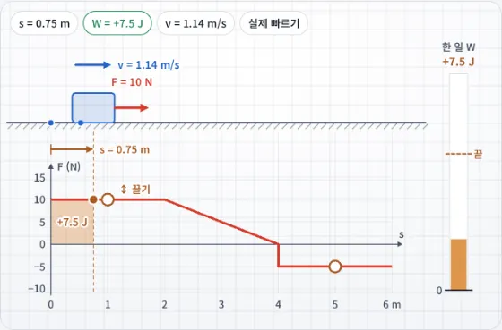
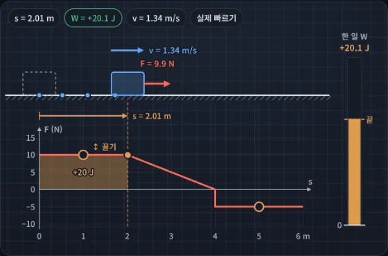
A2-01 일의 정의와 F-s 그래프 힘이 작용하는데 왜 어떤 힘은 일을 하고 어떤 힘은 일을 하지 않을까?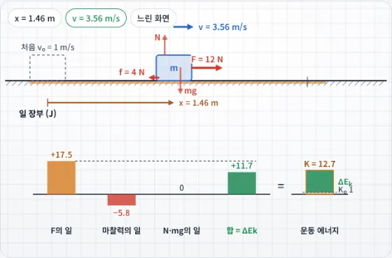
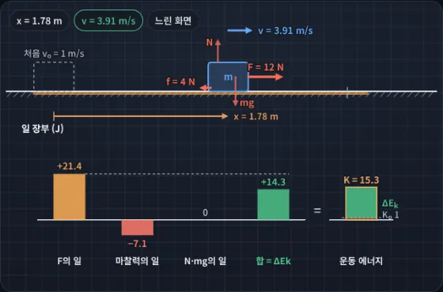
A2-02 일·운동 에너지 정리 여러 힘이 동시에 작용할 때 물체의 속력 변화는 무엇으로 정해질까?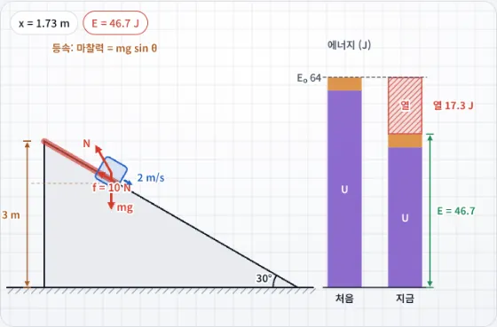
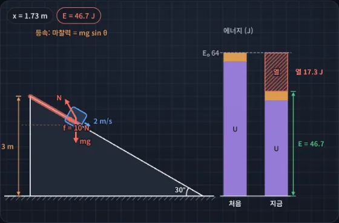
A2-03 보존력·비보존력과 역학적 에너지 변화 역학적 에너지는 언제 보존되고, 보존되지 않으면 그 차이는 어디로 갈까?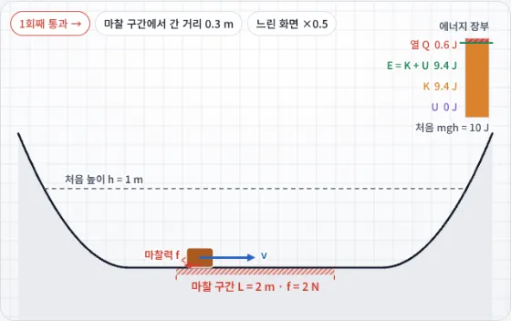
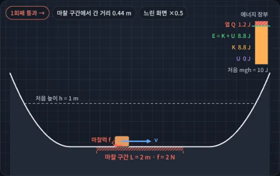
A2-04 마찰 구간 문제의 에너지 장부 마찰 구간이 여러 개이거나 왕복하는 문제를 미지수 두세 개로 끝내려면?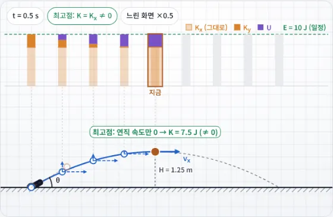
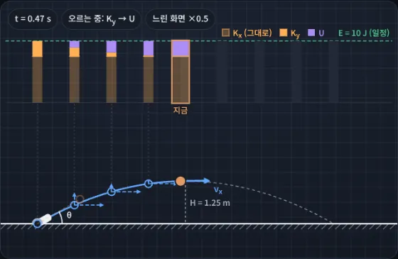
A2-05 포물선 운동의 역학적 에너지 포물선 운동에서 운동 에너지와 퍼텐셜 에너지는 정확히 무엇을 주고받을까?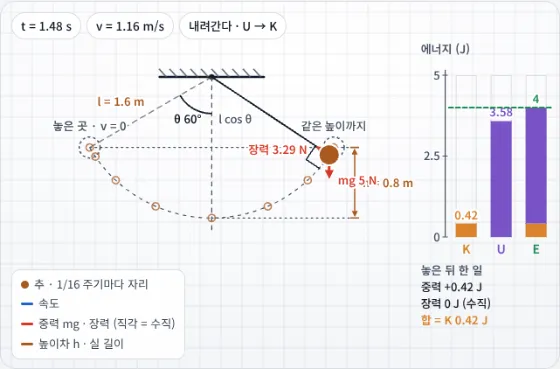
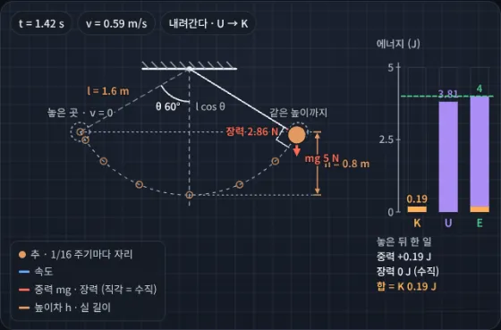
A2-06 단진자의 역학적 에너지 단진자의 최대 속력은 무엇으로 정해지고, 에너지 그래프는 왜 T/2마다 반복될까?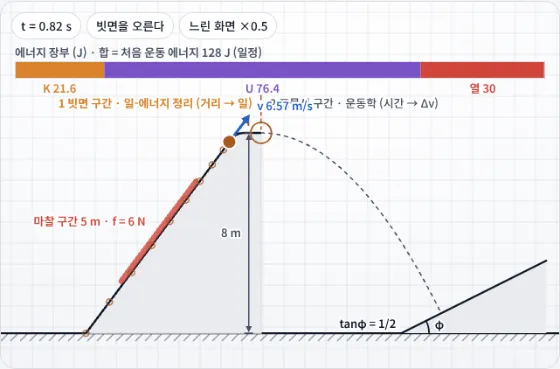
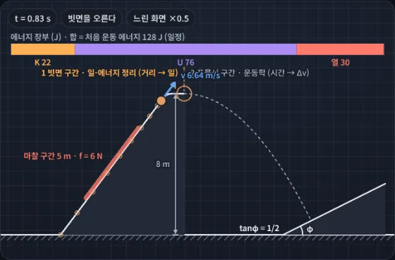
A2-07 일-에너지와 운동학·포물선의 결합 빗면 구간과 포물선 구간이 이어진 킬러 문항은 어디서 끊어 생각해야 할까?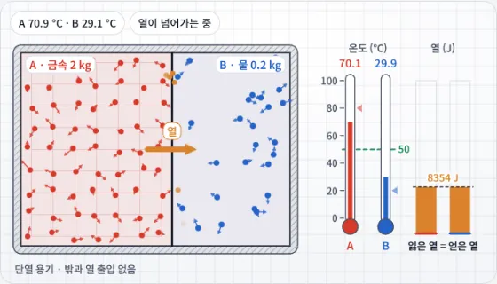
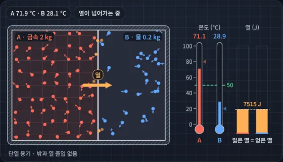
A2-08 온도·열·비열·열용량·열평형 온도와 열은 어떻게 다르고, 접촉한 두 물체의 나중 온도는 어떻게 정해질까?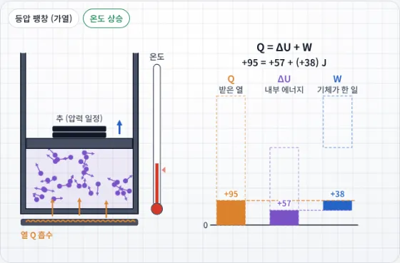
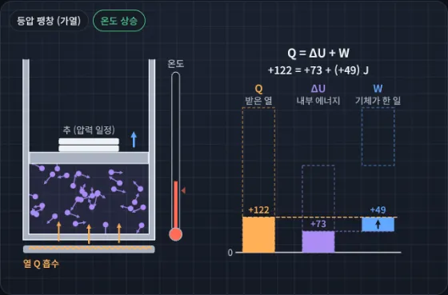
A2-09 일과 열의 전환·내부 에너지·열역학 제1법칙 기체에 열을 주면 그 에너지는 어디에 쓰이고, 일과 열은 어떤 장부로 정리될까?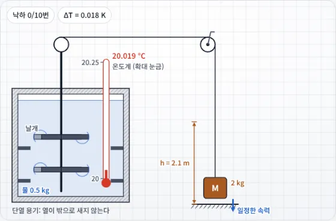
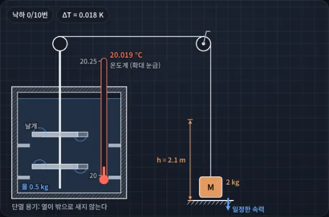
A2-10 열의 일당량 (줄의 실험) 역학적 일과 열이 같은 에너지라는 것을 어떻게 증명했고, 시험에서는 어떤 등식 하나로 풀까?